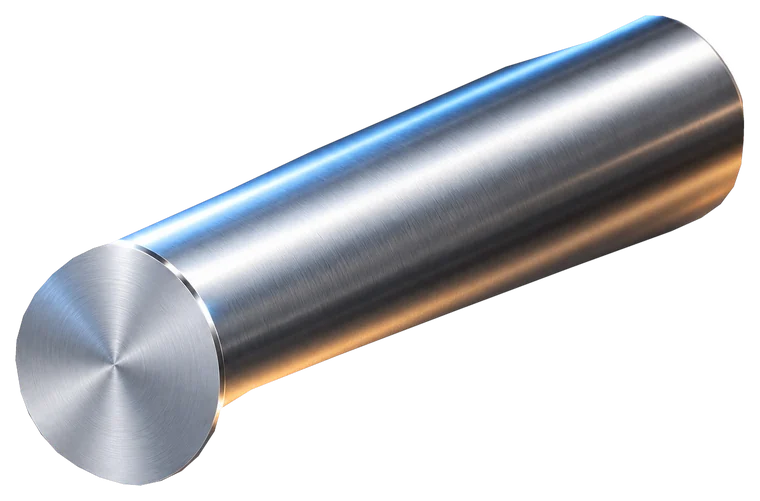

Исходные вычисления и сценарии не переписываются без необходимости.
ЕДИНАЯ CNC-СИСТЕМА
Всё для работы
у станка.
Режимы, расчёты, геометрия, укладка, справочник и CNC-напарник — в одном offline-first приложении.
Offline-ready
828D
CK52PT-Y
СКВОЗНОЙ WORKFLOW
Текущая деталь
Начни с геометрии или материала
0%
МОДУЛИ
Рабочая система
МОЙ СТАНОК● READY
Tengyue CK52PT-YSINUMERIK 828D · ShopTurn
Шпиндель4000 rpmРевольвер15 поз.ОсиX / Z / Y / C
LOCAL · OFFLINE
Tengyue CK52PT-Y · SINUMERIK 828D
ГОТОВНОСТЬ0 из 7 этапов
0%
СВОДКА ДЕТАЛИЧто уже собрано
Материал—
Геометрия—
Заготовка—
Режим—
Инструмент—
Маршрут—
07 · РЕЗУЛЬТАТ
Новая деталь
Tengyue CK52PT-Y · SINUMERIK 828D
НЕ ХВАТАЕТ ДАННЫХ
Материал—
Заготовка—
Геометрия—
Инструмент—
Проверенный режим—
CutCalc—
Box—
ТЕХПРОЦЕССОперации Co-Pilot
0 операций
ДЛЯ СТОЙКИЧерновик команд
проверка перед запуском обязательна
NC DRAFT · SINUMERIKOFFLINE
; Нет рассчитанных операций Co-Pilot
Черновик .NC собирается только из уже рассчитанных режимов Co-Pilot. Он не добавляет траектории движения, смену инструмента, нули детали или безопасные подводы, которых нет в текущем проекте.
МОДУЛЬ
Раздел
Модуль будет подключён нативно в общий интерфейс.
Оболочка готова
Интеграция логики — следующий этап
Модуль получает общую навигацию, тему, профиль станка и offline-core.
Перед удалением старой версии проверяем расчёты и работу без сети.
CNC REFERENCEРежимы · Моя база
МОЯ БАЗА — МОЁ ПРЕИМУЩЕСТВОПроверенные режимы. Реальные детали.
0записей
AISI 304Проверенный режимНЕРЖАВЕЙКА
1 / 1
Фланец Ø185Проверенный режим
Заготовка—
Операция—
Обороты—
Подача—
Глубина—
Инструмент—
1 / 1
＋
Пока пусто
Добавь первый проверенный режим для этого материала.
⌕
SINUMERIK 828D · CK52PT-YCNC Copilot — Справочник кодов
⌕
M-коды0
АВТОНОМНЫЙ CNC-НАПАРНИКCNC Copilot
Tengyue CK52PT-Y
SINUMERIK 828D / ShopTurn
Макс. шпиндель4000 rpm
Расчётная мощность17 kW
ГидроцилиндрBK-1552 · 6000
Стойка828D
ОГРАНИЧЕНИЯТекущая установка
общий профиль02 · МАТЕРИАЛЗаготовка
ISO M⌕
ВЫБРАНОAISI304
03 · ТЕХПРОЦЕССМаршрут операций
1 оп.04 · СТРАТЕГИЯРежим работы
детерминированное ядроПЕРЕД РАСЧЁТОМЧто учитывается
МатериалISO-группа + machinability
Операциякоэффициенты Vc/f/ap
Ограничение Sминимум физ. лимитов
Мощностьоценка нагрузки
CNC GEOMETRY · FULL OFFLINEГеометрия и координаты
Геометрия, координаты
и режимы.
12 расчётных модулей из CNC Geometry: шар → 4 грани, ось C, PCD, лепестки, лыски, многоугольники, пазы, отверстия, резьба, дуги, линейные массивы и фрезерные режимы.
РАСЧЁТНЫЕ МОДУЛИИнженерная геометрия
12 модулей
X/Z/C
РЕЗУЛЬТАТ
Результатрасчёт
Техническая схемаSVG · offline
Координаты / шагтаблица
Для стойкикопируемые данные
Действиялокально
LOCAL STORAGEСохранённые расчёты
cnc-geometry-projects-v1ЦЕХОВОЙ КАЛЬКУЛЯТОРCutCalc CNC
Готов к работе
ЗАГОТОВКА
ОБРАБОТКА
Расчёт по пруткам⌄
Мин. зажим46 мм
НУЖНО МАТЕРИАЛА
—м
Заполни длину детали и количество

Расход / деталь—
Чистый размер—
Потери—
История
Пока пусто
Расчёты появятся здесь после перехода в историю и останутся локально на устройстве.
BOX · НАТИВНЫЙ МОДУЛЬ
Технические проекцииЛистай →
Вид сверху X × Y
450 × 250 ммВид сбоку X × Z
450 × 20 ммВид с торца Y × Z
250 × 20 ммОбщий вид
45 деталей · 1 слойМой шкаф
Каталог Copilot + твои реальные пластины и державки. Локальный шкаф хранится на устройстве под исходным ключом cncFullToolsV2.
Всего карточек0
Мой шкаф0
Пластин в наличии0
Проекты и данные
Сводка того, что уже сохранено в модулях. Никакой второй параллельной базы — Projects читает существующие данные и ведёт в их исходный модуль.
Сохранено0
Источников с данными0
Режимов0
Мой шкаф0
CNC REFERENCEРежимы обработки
0Личные проверенные режимы из совместимой IndexedDB.
CUT CALC CNCИстория расчётов
0Сохранённые расчёты партии и расхода заготовки.
CNC GEOMETRYГеометрические проекты
0Сохранённые вычисления, координаты и параметры геометрии.
ИНСТРУМЕНТМой шкаф
0Локальные пластины, державки, наличие и ячейки хранения.
CNC COPILOTТекущий маршрут
0Количество операций в текущем сохранённом техпроцессе.
ПОСЛЕДНИЕ ДАННЫЕНедавняя работа
0 записей
▣Пока пусто
Сохрани расчёт, геометрию или проверенный режим — он появится здесь автоматически.
Tengyue CK52PT-Y
SINUMERIK 828D / ShopTurn
● VERIFIED HARDWAREA2-615 позиций · BMT40 / ER25X / Z / Y / C
4000
Эффективный лимит шпинделяG96 / LIMS будет ограничен минимальным физическим пределом.
СТАНОКОсновные параметры
общие для модулейМЕХАНИКАШпиндель и револьвер
ЗАЖИМГидроцилиндр
ограничение RPMПодтверждённый профильBK-1552 · max 6000 rpm
Макс. давление≈ 44.1 bar
ПРИВОДДвигатель шпинделя
SIMOTICS MНепрерывная расчётная база17 kW
Политикаконсервативная S1
ХРАНЕНИЕЕдиный профиль
cncFullMachineV1ИспользуетсяCNC Copilot · общий профиль · будущие модули
Хранениелокально на устройстве · offline-first